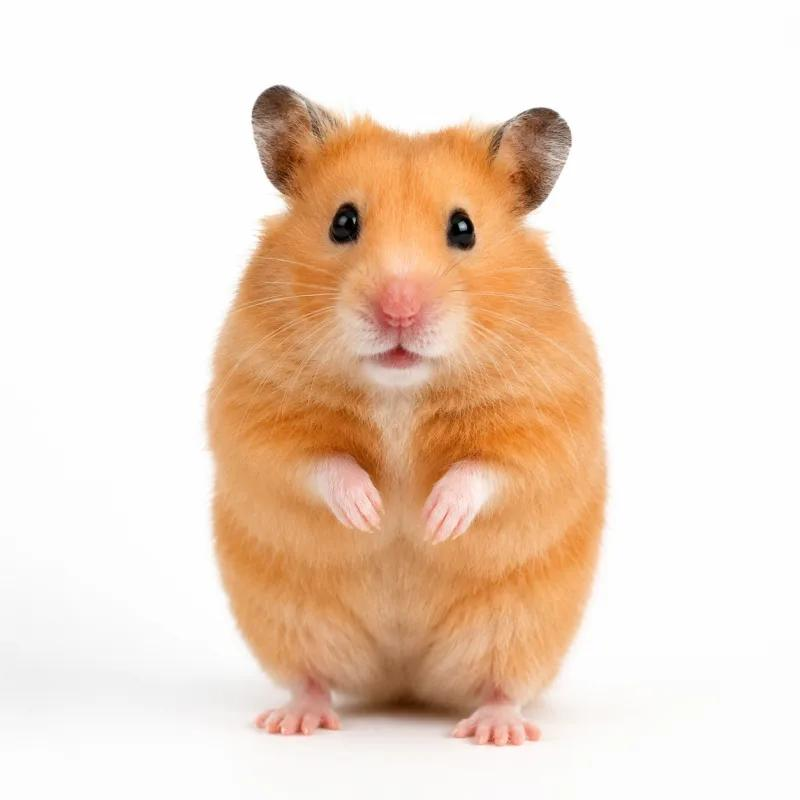
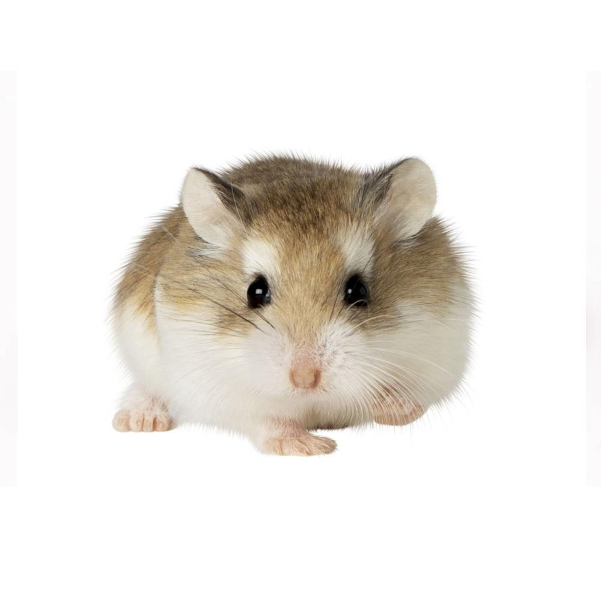
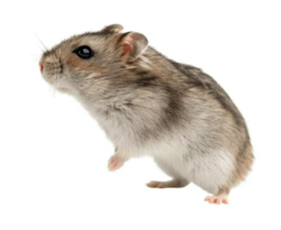
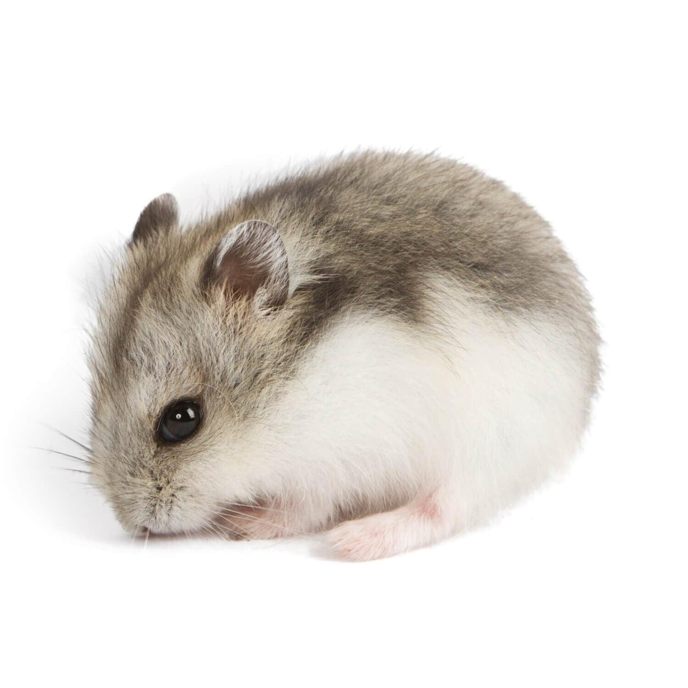
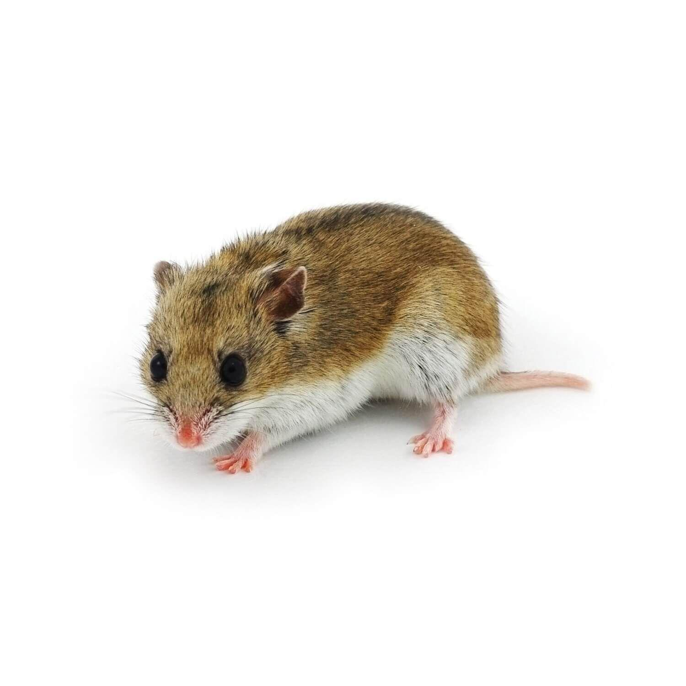

Hamster Breeds

01
Syrian Hamster
- Size
- 5–7 inches
- Temperament
- Friendly, curious, independent
- Lifespan
- 2–3 years
- Best For
- First-time owners

02
Roborovski Hamster
- Size
- 2–3 inches
- Temperament
- Fast, active, shy
- Lifespan
- 2–3 years
- Best For
- Observing and watching

03
Campbell's Dwarf Hamster
- Size
- 3–4 inches
- Temperament
- Curious, active, territorial
- Lifespan
- 1.5–2 years
- Best For
- Experienced owners

04
Winter White Dwarf Hamster
- Size
- 3–4 inches
- Temperament
- Gentle, curious, energetic
- Lifespan
- 1.5–2 years
- Best For
- Observing and gentle interaction

05
Chinese Hamster
- Size
- 3–5 inches
- Temperament
- Shy, gentle, agile
- Lifespan
- 2–3 years
- Best For
- Patient owners